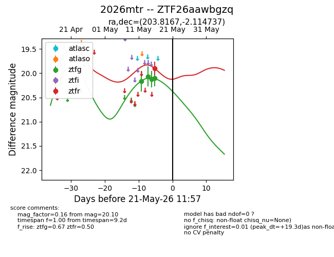
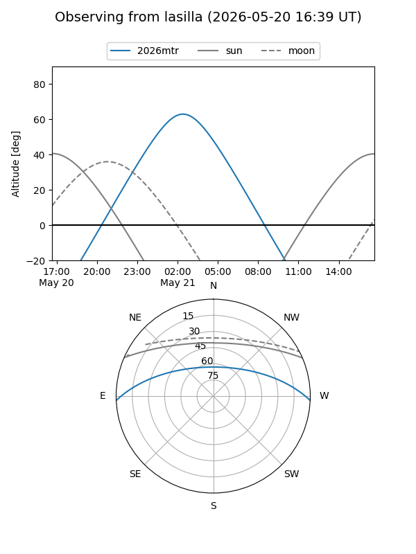
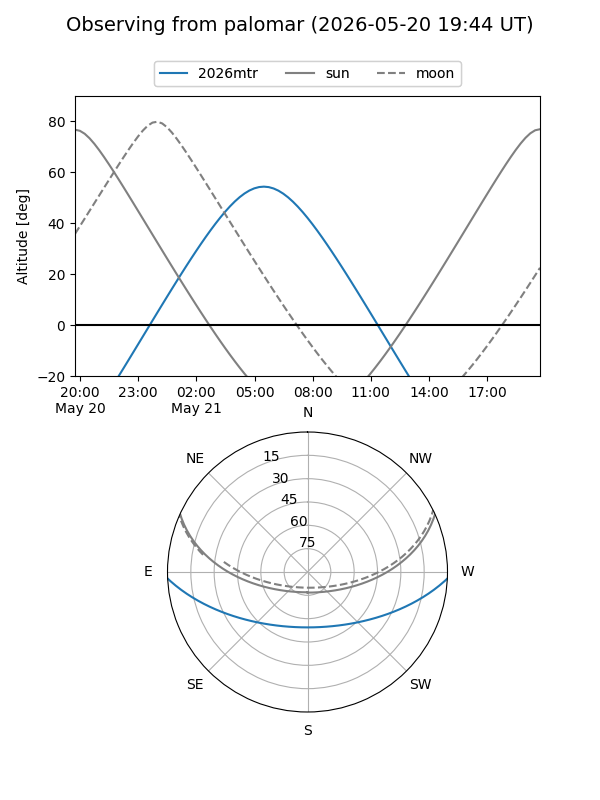
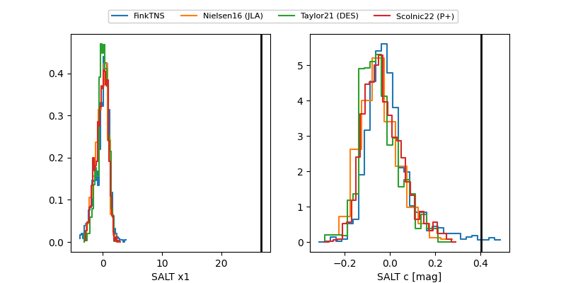

2026mtr
Target 2026mtr at 2026-05-21 11:59
Aliases and brokers:
lsst-FINK: link
lsst-Lasair: link
lsst-ALeRCE: link
ztf-FINK: link
ztf-Lasair: link
ztf-ALeRCE: link
TNS: link
YSE: link
alt names
ZTF26aawbgzq (ztf,fink_ztf)
2026mtr (tns,yse)
Coordinates:
equatorial (ra, dec) = 203.8167,-2.11474
equatorial (HMS+DMS) = 13:35:16.00,-02:06:53.05
galactic (l, b) = (324.5132,+58.90830)
Flags:
Photometry:
last ztfg=20.10, ztfr=19.90
4 ztfg, 1 ztfr detections
Lightcurve

Visibility


Additional plots
